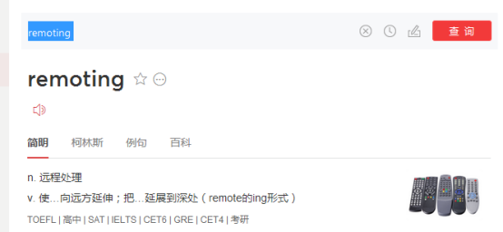
1、一种分布式处理方式。从字面意义上看出，他是基于.net平台的一种远程对象开发技术，该技术是将远程计算机中的数据视为分布式对象来进行开发。
2、一种网络通信技术。既然这种技术可以操作远程计算机的数据，他当然是网络通信技术。
1、Xml
2、SOAP
SOAP=简单对象传输协议。
3、序列化
-二进制
-xml
通过通道(Channel)实现网络之间通信的。
1、首先通过Remoting访问通道以获得服务端访问对象
2、再通过代理解析为客户端对象
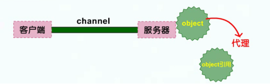
3、然后就可以在客户端去操作这个服务端对象了
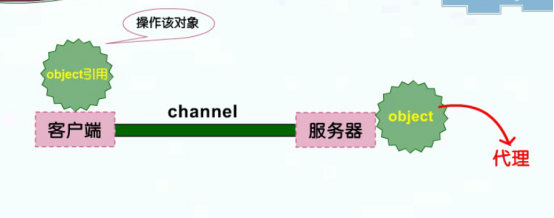
客户端要获取服务器端对象，我们只需要知道通道的类型(TcpChannel和HttpChannel)和服务器端的端口号就可以了，无需知道数据包的格式。
要注意的是，客户端在获取服务端对象时，并不是获取服务端实际的对象，而是获取了他的引用，这既保证了客户端和服务器端的有关对象的松散耦合，同时也优化了通信的性能。
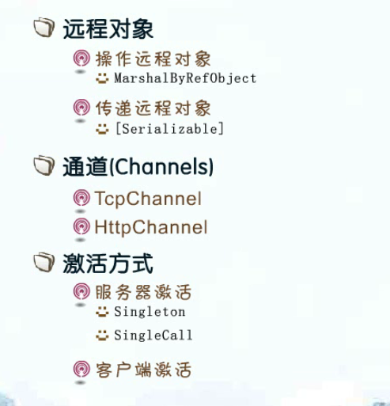
远程对象是.net remoting的核心元素，他分为两种
1、操作远程对象
2、传递远程对象
操作远程对象，就是对象运行在远程，客户端通过引用来发送操作消息。这种远程对象必须是MarshlByRefObject这个类的派生类， 这样才能将他的对象引用传递到客户端。
传递远程对象是指将远程对象复制到本地，客户端对其操作，然后把操作后的副本发送回服务器端，此类的操作对象必须标记为[Serializable]
分为 TcpChannel 和HttpChannel。
TcpChannel使用二进制格式序列化消息对象，因此他具有更高的传输性能。
HttpChannel使用SOAP格式序列化消息对象，因此他具有更好的互操作性。
什么是激活方式？我们在操作远程对象时需要考虑一个问题：远程对象何时创建，由谁来创建，这些都取决于激活方式。
激活方式分为两种：服务器激活和客户端激活。
主要是学习服务器激活方式。
Singleton
SingleCall
using System.Runtime.Remoting;
using System.Runtime.Remoting.Channels;
using System.Runtime.Remoting.Channels.Tcp;
using System.Runtime.Remoting.Channels.Http;
远程对象类必须派生自System.MarshlByRefObject。
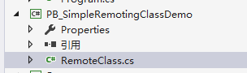
/*
* 远程对象类必须派生自MarshalByRefObject
*/
public class RemoteClass : MarshalByRefObject
{
int num = 0;
public RemoteClass()
{
Console.WriteLine("激活了RemoteClass远程对象");
}
public string Method(string name)
{
Console.WriteLine("第{0}次调用，参数为{1}", num++, name);
return "hello " + name;
}
}
1、注册管道
2、注册服务器激活对象方式
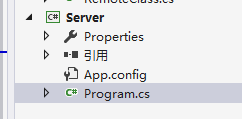
/*
* 需要引用System.Runtime.Remoting
*/
class Program
{
static void Main(string[] args)
{
//1、注册管道
TcpChannel tcpChannel = new TcpChannel(10000);//端口指定
HttpChannel httpChannel = new HttpChannel(10001);
ChannelServices.RegisterChannel(tcpChannel, true);
ChannelServices.RegisterChannel(httpChannel, false);
//2、注册服务器激活方式
//WellKnownObjectMode.Singleton表示生成的实例是单例模式
//WellKnownObjectMode.SingleCall表示每个传入消息是由新的对象实例
RemotingConfiguration.RegisterWellKnownServiceType(typeof(RemoteClass), "HelloTest", WellKnownObjectMode.SingleCall);
Console.WriteLine("这里是服务器端宿主程序");
Console.Read();
}
}
1、注册通道
2、根据URL获取对象代理
3、使用代理调用远程对象
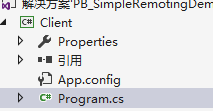
class Program
{
static void Main(string[] args)
{
#region TCP方式
/*
//1、注册通道
TcpChannel tcpChannel = new TcpChannel();//客户端不需要指定端口号
ChannelServices.RegisterChannel(tcpChannel, true);
//2、创建代理
RemoteClass rc = (RemoteClass)Activator.GetObject(typeof(RemoteClass), "tcp://localhost:10000/HelloTest");//1000端口号是服务器端指定的
if (rc == null)
{
Console.WriteLine("Could not locate TCP Server");
}
Console.WriteLine("TCP方式{0}", rc.Method("张飞"));
//*/
#endregion
#region Http方式
HttpChannel httpChannel = new HttpChannel();
ChannelServices.RegisterChannel(httpChannel, false);
RemoteClass object2 = (RemoteClass)Activator.GetObject(typeof(RemoteClass), "http://localhost:10001/HelloTest");
if (object2 == null)
{
Console.WriteLine("Could not locate HTTP Server");
}
Console.WriteLine("HTTP方式{0}", object2.Method("关羽"));
#endregion
Console.Read();
}
}
1、设置Server为启动项目
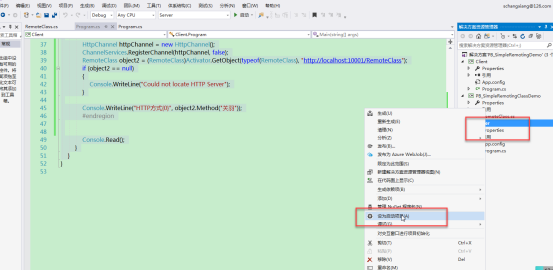
2、f5启动服务端
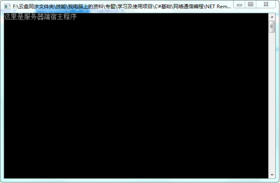
4、启动client
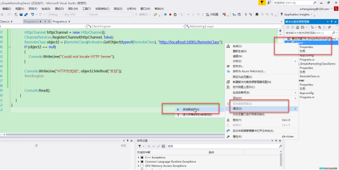
效果：
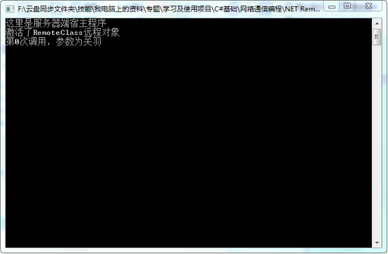
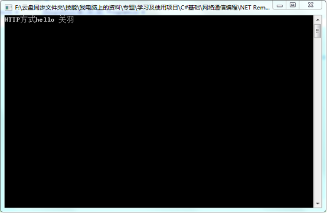
不用代码注册，用配置文件
服务端：
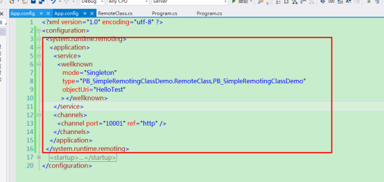
RemotingConfiguration.Configure(AppDomain.CurrentDomain.SetupInformation.ConfigurationFile, true);
客户端：
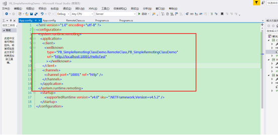
RemotingConfiguration.Configure(AppDomain.CurrentDomain.SetupInformation.ConfigurationFile, true);
RemoteClass obj = new RemoteClass();
Console.WriteLine("HTTP方式{0}", obj.Method("祥子"));